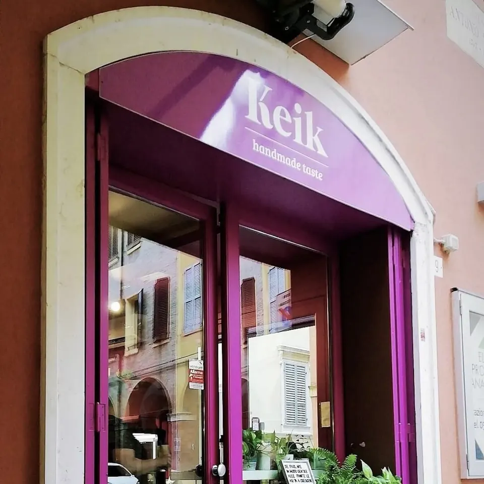
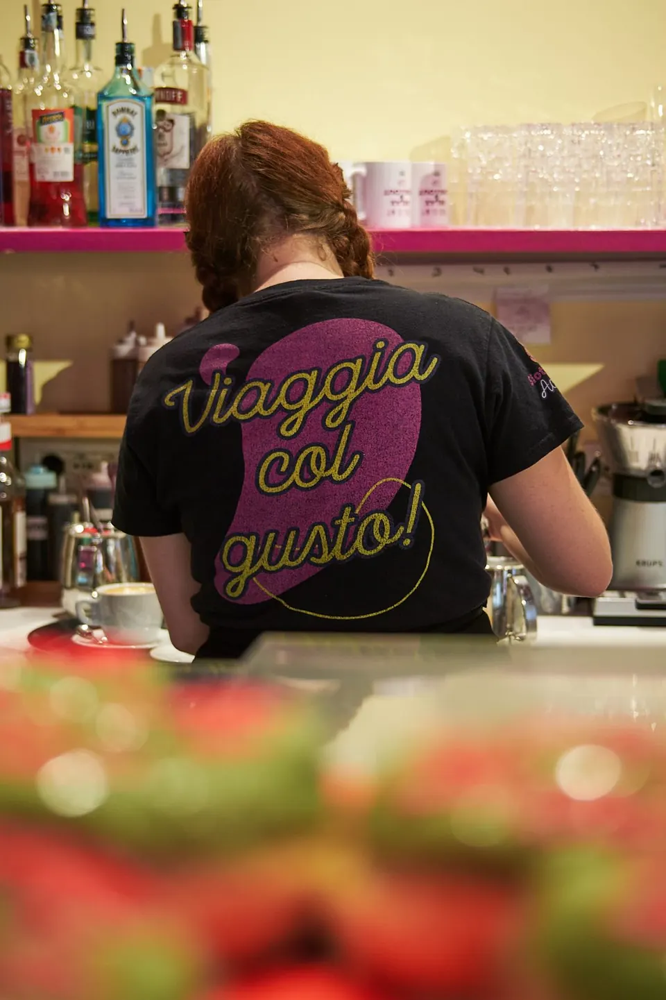
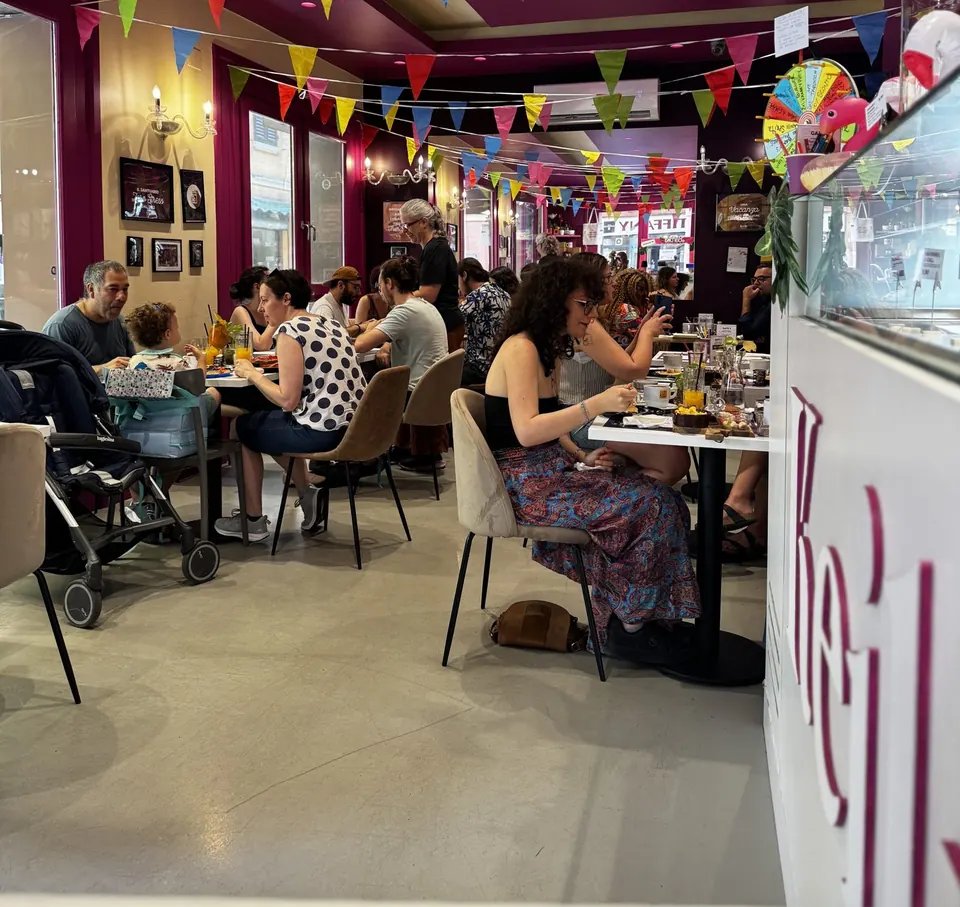

CCS → MOD · dal 2013
Da Caracas a Modena, per farti viaggiare col gusto.
KEIK nasce nel 2013 da una coppia arrivata dal Venezuela, che porta a Modena il brunch quando in città ancora non c’era. Da allora Via Canalino 51 è un piccolo aeroporto: ogni piatto parte da un paese diverso, e ogni mese la vetrina cambia destinazione.

 GATEVia Canalino 51
GATEVia Canalino 51
Il nostro diario di bordo
Tredici anni in sei scali.
Tocca uno scalo e l’aereo ti ci porta.
Si parte: apre KEIK in Via Canalino
Una coppia arrivata dal Venezuela apre KEIK nel centro storico di Modena e porta in città il brunch, che qui ancora non c’era.
Tre cose che portiamo in ogni volo.
Fatto a mano, da noi
Cupcake, brownie, banana bread e torte escono dal nostro laboratorio di pasticceria. Le mani in pasta ce le mettiamo ancora noi.
Il mondo nel piatto
Venezuela, Stati Uniti, Messico, Giappone, Corea, Filippine: ogni piatto ha un codice di partenza, e la vetrina cambia paese ogni mese.
Qui si sta bene
Niente coperto e niente fretta. Vieni per un caffè e ti ritrovi a restare per il brunch.
L’equipaggio
Le persone dietro il bancone.
Cucina, laboratorio e sala: un equipaggio che parla tante lingue e ti accoglie come a casa.




IL NOSTRO PASSEGGERO PIÙ LENTO
Conosci Brady, il bradipo di KEIK.
È la nostra mascotte, ha i suoi pancakes in carta e un videogioco tutto suo: Brady’s Quest. Si gioca dal telefono, anche mentre aspetti al tavolo.
La storia la scrivi anche tu, al tavolo.
Brunch, pranzo, merenda o aperitivo: scegli il momento e prenota in un minuto.